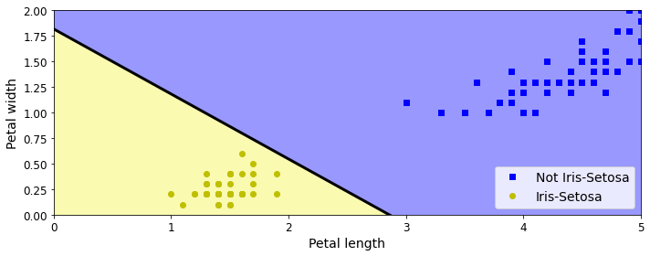
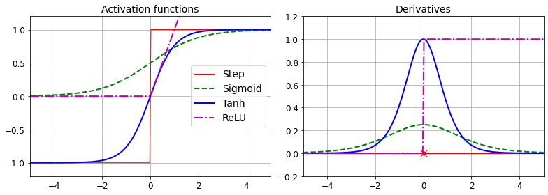
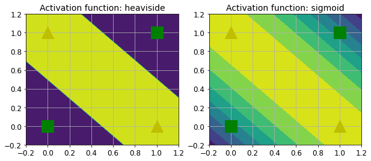
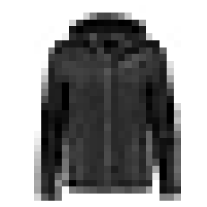
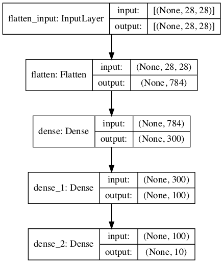
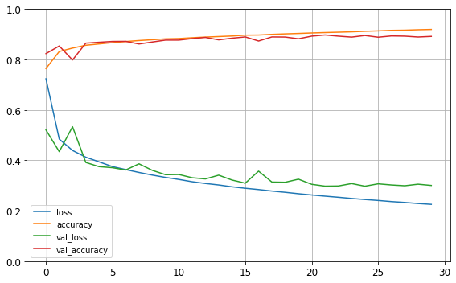
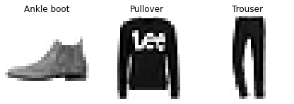
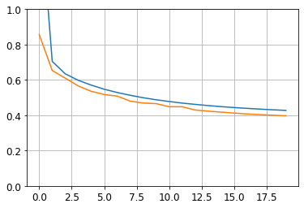
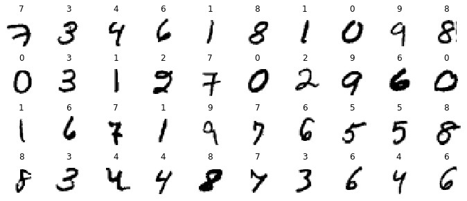
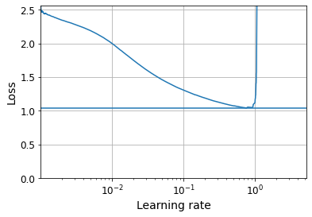

# Python ≥3.5 is required
import sys
assert sys.version_info >= (3, 5)
# Scikit-Learn ≥0.20 is required
import sklearn
assert sklearn.__version__ >= "0.20"
try:
# %tensorflow_version only exists in Colab.
%tensorflow_version 2.x
except Exception:
pass
# TensorFlow ≥2.0 is required
import tensorflow as tf
assert tf.__version__ >= "2.0"
# Common imports
import numpy as np
import os
# to make this notebook's output stable across runs
np.random.seed(42)
# To plot pretty figures
%matplotlib inline
import matplotlib as mpl
import matplotlib.pyplot as plt
mpl.rc('axes', labelsize=14)
mpl.rc('xtick', labelsize=12)
mpl.rc('ytick', labelsize=12)
# Where to save the figures
PROJECT_ROOT_DIR = "."
CHAPTER_ID = "ann"
IMAGES_PATH = os.path.join(PROJECT_ROOT_DIR, "images", CHAPTER_ID)
os.makedirs(IMAGES_PATH, exist_ok=True)
def save_fig(fig_id, tight_layout=True, fig_extension="png", resolution=300):
path = os.path.join(IMAGES_PATH, fig_id + "." + fig_extension)
print("Saving figure", fig_id)
if tight_layout:
plt.tight_layout()
plt.savefig(path, format=fig_extension, dpi=resolution)Chapter 10 – Introduction to Artificial Neural Networks with Keras
This notebook contains all the sample code and solutions to the exercises in chapter 10.
Setup
First, let’s import a few common modules, ensure MatplotLib plots figures inline and prepare a function to save the figures. We also check that Python 3.5 or later is installed (although Python 2.x may work, it is deprecated so we strongly recommend you use Python 3 instead), as well as Scikit-Learn ≥0.20 and TensorFlow ≥2.0.
Perceptrons
Note: we set max_iter and tol explicitly to avoid warnings about the fact that their default value will change in future versions of Scikit-Learn.
import numpy as np
from sklearn.datasets import load_iris
from sklearn.linear_model import Perceptron
iris = load_iris()
X = iris.data[:, (2, 3)] # petal length, petal width
y = (iris.target == 0).astype(np.int)
per_clf = Perceptron(max_iter=1000, tol=1e-3, random_state=42)
per_clf.fit(X, y)
y_pred = per_clf.predict([[2, 0.5]])y_predarray([1])a = -per_clf.coef_[0][0] / per_clf.coef_[0][1]
b = -per_clf.intercept_ / per_clf.coef_[0][1]
axes = [0, 5, 0, 2]
x0, x1 = np.meshgrid(
np.linspace(axes[0], axes[1], 500).reshape(-1, 1),
np.linspace(axes[2], axes[3], 200).reshape(-1, 1),
)
X_new = np.c_[x0.ravel(), x1.ravel()]
y_predict = per_clf.predict(X_new)
zz = y_predict.reshape(x0.shape)
plt.figure(figsize=(10, 4))
plt.plot(X[y==0, 0], X[y==0, 1], "bs", label="Not Iris-Setosa")
plt.plot(X[y==1, 0], X[y==1, 1], "yo", label="Iris-Setosa")
plt.plot([axes[0], axes[1]], [a * axes[0] + b, a * axes[1] + b], "k-", linewidth=3)
from matplotlib.colors import ListedColormap
custom_cmap = ListedColormap(['#9898ff', '#fafab0'])
plt.contourf(x0, x1, zz, cmap=custom_cmap)
plt.xlabel("Petal length", fontsize=14)
plt.ylabel("Petal width", fontsize=14)
plt.legend(loc="lower right", fontsize=14)
plt.axis(axes)
save_fig("perceptron_iris_plot")
plt.show()Saving figure perceptron_iris_plot
Activation functions
def sigmoid(z):
return 1 / (1 + np.exp(-z))
def relu(z):
return np.maximum(0, z)
def derivative(f, z, eps=0.000001):
return (f(z + eps) - f(z - eps))/(2 * eps)z = np.linspace(-5, 5, 200)
plt.figure(figsize=(11,4))
plt.subplot(121)
plt.plot(z, np.sign(z), "r-", linewidth=1, label="Step")
plt.plot(z, sigmoid(z), "g--", linewidth=2, label="Sigmoid")
plt.plot(z, np.tanh(z), "b-", linewidth=2, label="Tanh")
plt.plot(z, relu(z), "m-.", linewidth=2, label="ReLU")
plt.grid(True)
plt.legend(loc="center right", fontsize=14)
plt.title("Activation functions", fontsize=14)
plt.axis([-5, 5, -1.2, 1.2])
plt.subplot(122)
plt.plot(z, derivative(np.sign, z), "r-", linewidth=1, label="Step")
plt.plot(0, 0, "ro", markersize=5)
plt.plot(0, 0, "rx", markersize=10)
plt.plot(z, derivative(sigmoid, z), "g--", linewidth=2, label="Sigmoid")
plt.plot(z, derivative(np.tanh, z), "b-", linewidth=2, label="Tanh")
plt.plot(z, derivative(relu, z), "m-.", linewidth=2, label="ReLU")
plt.grid(True)
#plt.legend(loc="center right", fontsize=14)
plt.title("Derivatives", fontsize=14)
plt.axis([-5, 5, -0.2, 1.2])
save_fig("activation_functions_plot")
plt.show()Saving figure activation_functions_plot
def heaviside(z):
return (z >= 0).astype(z.dtype)
def mlp_xor(x1, x2, activation=heaviside):
return activation(-activation(x1 + x2 - 1.5) + activation(x1 + x2 - 0.5) - 0.5)x1s = np.linspace(-0.2, 1.2, 100)
x2s = np.linspace(-0.2, 1.2, 100)
x1, x2 = np.meshgrid(x1s, x2s)
z1 = mlp_xor(x1, x2, activation=heaviside)
z2 = mlp_xor(x1, x2, activation=sigmoid)
plt.figure(figsize=(10,4))
plt.subplot(121)
plt.contourf(x1, x2, z1)
plt.plot([0, 1], [0, 1], "gs", markersize=20)
plt.plot([0, 1], [1, 0], "y^", markersize=20)
plt.title("Activation function: heaviside", fontsize=14)
plt.grid(True)
plt.subplot(122)
plt.contourf(x1, x2, z2)
plt.plot([0, 1], [0, 1], "gs", markersize=20)
plt.plot([0, 1], [1, 0], "y^", markersize=20)
plt.title("Activation function: sigmoid", fontsize=14)
plt.grid(True)
Building an Image Classifier
First let’s import TensorFlow and Keras.
import tensorflow as tf
from tensorflow import kerastf.__version__'2.4.1'keras.__version__'2.4.0'Let’s start by loading the fashion MNIST dataset. Keras has a number of functions to load popular datasets in keras.datasets. The dataset is already split for you between a training set and a test set, but it can be useful to split the training set further to have a validation set:
fashion_mnist = keras.datasets.fashion_mnist
(X_train_full, y_train_full), (X_test, y_test) = fashion_mnist.load_data()The training set contains 60,000 grayscale images, each 28x28 pixels:
X_train_full.shape(60000, 28, 28)Each pixel intensity is represented as a byte (0 to 255):
X_train_full.dtypedtype('uint8')Let’s split the full training set into a validation set and a (smaller) training set. We also scale the pixel intensities down to the 0-1 range and convert them to floats, by dividing by 255.
X_valid, X_train = X_train_full[:5000] / 255., X_train_full[5000:] / 255.
y_valid, y_train = y_train_full[:5000], y_train_full[5000:]
X_test = X_test / 255.You can plot an image using Matplotlib’s imshow() function, with a 'binary' color map:
plt.imshow(X_train[0], cmap="binary")
plt.axis('off')
plt.show()
The labels are the class IDs (represented as uint8), from 0 to 9:
y_trainarray([4, 0, 7, ..., 3, 0, 5], dtype=uint8)Here are the corresponding class names:
class_names = ["T-shirt/top", "Trouser", "Pullover", "Dress", "Coat",
"Sandal", "Shirt", "Sneaker", "Bag", "Ankle boot"]So the first image in the training set is a coat:
class_names[y_train[0]]'Coat'The validation set contains 5,000 images, and the test set contains 10,000 images:
X_valid.shape(5000, 28, 28)X_test.shape(10000, 28, 28)Let’s take a look at a sample of the images in the dataset:
n_rows = 4
n_cols = 10
plt.figure(figsize=(n_cols * 1.2, n_rows * 1.2))
for row in range(n_rows):
for col in range(n_cols):
index = n_cols * row + col
plt.subplot(n_rows, n_cols, index + 1)
plt.imshow(X_train[index], cmap="binary", interpolation="nearest")
plt.axis('off')
plt.title(class_names[y_train[index]], fontsize=12)
plt.subplots_adjust(wspace=0.2, hspace=0.5)
save_fig('fashion_mnist_plot', tight_layout=False)
plt.show()Saving figure fashion_mnist_plotmodel = keras.models.Sequential()
model.add(keras.layers.Flatten(input_shape=[28, 28]))
model.add(keras.layers.Dense(300, activation="relu"))
model.add(keras.layers.Dense(100, activation="relu"))
model.add(keras.layers.Dense(10, activation="softmax"))keras.backend.clear_session()
np.random.seed(42)
tf.random.set_seed(42)model = keras.models.Sequential([
keras.layers.Flatten(input_shape=[28, 28]),
keras.layers.Dense(300, activation="relu"),
keras.layers.Dense(100, activation="relu"),
keras.layers.Dense(10, activation="softmax")
])model.layers[<tensorflow.python.keras.layers.core.Flatten at 0x7fd9891fef90>,
<tensorflow.python.keras.layers.core.Dense at 0x7fd989205290>,
<tensorflow.python.keras.layers.core.Dense at 0x7fd989205610>,
<tensorflow.python.keras.layers.core.Dense at 0x7fd989205a10>]model.summary()Model: "sequential"
_________________________________________________________________
Layer (type) Output Shape Param #
=================================================================
flatten (Flatten) (None, 784) 0
_________________________________________________________________
dense (Dense) (None, 300) 235500
_________________________________________________________________
dense_1 (Dense) (None, 100) 30100
_________________________________________________________________
dense_2 (Dense) (None, 10) 1010
=================================================================
Total params: 266,610
Trainable params: 266,610
Non-trainable params: 0
_________________________________________________________________keras.utils.plot_model(model, "my_fashion_mnist_model.png", show_shapes=True)
hidden1 = model.layers[1]
hidden1.name'dense'model.get_layer(hidden1.name) is hidden1Trueweights, biases = hidden1.get_weights()weightsarray([[ 0.02448617, -0.00877795, -0.02189048, ..., -0.02766046,
0.03859074, -0.06889391],
[ 0.00476504, -0.03105379, -0.0586676 , ..., 0.00602964,
-0.02763776, -0.04165364],
[-0.06189284, -0.06901957, 0.07102345, ..., -0.04238207,
0.07121518, -0.07331658],
...,
[-0.03048757, 0.02155137, -0.05400612, ..., -0.00113463,
0.00228987, 0.05581069],
[ 0.07061854, -0.06960931, 0.07038955, ..., -0.00384101,
0.00034875, 0.02878492],
[-0.06022581, 0.01577859, -0.02585464, ..., -0.00527829,
0.00272203, -0.06793761]], dtype=float32)weights.shape(784, 300)biasesarray([0., 0., 0., 0., 0., 0., 0., 0., 0., 0., 0., 0., 0., 0., 0., 0., 0.,
0., 0., 0., 0., 0., 0., 0., 0., 0., 0., 0., 0., 0., 0., 0., 0., 0.,
0., 0., 0., 0., 0., 0., 0., 0., 0., 0., 0., 0., 0., 0., 0., 0., 0.,
0., 0., 0., 0., 0., 0., 0., 0., 0., 0., 0., 0., 0., 0., 0., 0., 0.,
0., 0., 0., 0., 0., 0., 0., 0., 0., 0., 0., 0., 0., 0., 0., 0., 0.,
0., 0., 0., 0., 0., 0., 0., 0., 0., 0., 0., 0., 0., 0., 0., 0., 0.,
0., 0., 0., 0., 0., 0., 0., 0., 0., 0., 0., 0., 0., 0., 0., 0., 0.,
0., 0., 0., 0., 0., 0., 0., 0., 0., 0., 0., 0., 0., 0., 0., 0., 0.,
0., 0., 0., 0., 0., 0., 0., 0., 0., 0., 0., 0., 0., 0., 0., 0., 0.,
0., 0., 0., 0., 0., 0., 0., 0., 0., 0., 0., 0., 0., 0., 0., 0., 0.,
0., 0., 0., 0., 0., 0., 0., 0., 0., 0., 0., 0., 0., 0., 0., 0., 0.,
0., 0., 0., 0., 0., 0., 0., 0., 0., 0., 0., 0., 0., 0., 0., 0., 0.,
0., 0., 0., 0., 0., 0., 0., 0., 0., 0., 0., 0., 0., 0., 0., 0., 0.,
0., 0., 0., 0., 0., 0., 0., 0., 0., 0., 0., 0., 0., 0., 0., 0., 0.,
0., 0., 0., 0., 0., 0., 0., 0., 0., 0., 0., 0., 0., 0., 0., 0., 0.,
0., 0., 0., 0., 0., 0., 0., 0., 0., 0., 0., 0., 0., 0., 0., 0., 0.,
0., 0., 0., 0., 0., 0., 0., 0., 0., 0., 0., 0., 0., 0., 0., 0., 0.,
0., 0., 0., 0., 0., 0., 0., 0., 0., 0., 0.], dtype=float32)biases.shape(300,)model.compile(loss="sparse_categorical_crossentropy",
optimizer="sgd",
metrics=["accuracy"])This is equivalent to:
model.compile(loss=keras.losses.sparse_categorical_crossentropy,
optimizer=keras.optimizers.SGD(),
metrics=[keras.metrics.sparse_categorical_accuracy])history = model.fit(X_train, y_train, epochs=30,
validation_data=(X_valid, y_valid))Epoch 1/30
1719/1719 [==============================] - 2s 1ms/step - loss: 1.0187 - accuracy: 0.6807 - val_loss: 0.5207 - val_accuracy: 0.8234
Epoch 2/30
1719/1719 [==============================] - 2s 921us/step - loss: 0.5028 - accuracy: 0.8260 - val_loss: 0.4345 - val_accuracy: 0.8538
Epoch 3/30
1719/1719 [==============================] - 2s 881us/step - loss: 0.4485 - accuracy: 0.8423 - val_loss: 0.5334 - val_accuracy: 0.7982
Epoch 4/30
1719/1719 [==============================] - 2s 902us/step - loss: 0.4209 - accuracy: 0.8535 - val_loss: 0.3916 - val_accuracy: 0.8652
Epoch 5/30
1719/1719 [==============================] - 2s 908us/step - loss: 0.4061 - accuracy: 0.8580 - val_loss: 0.3750 - val_accuracy: 0.8686
Epoch 6/30
1719/1719 [==============================] - 2s 916us/step - loss: 0.3755 - accuracy: 0.8669 - val_loss: 0.3709 - val_accuracy: 0.8718
Epoch 7/30
1719/1719 [==============================] - 2s 879us/step - loss: 0.3655 - accuracy: 0.8711 - val_loss: 0.3618 - val_accuracy: 0.8722
Epoch 8/30
1719/1719 [==============================] - 2s 894us/step - loss: 0.3483 - accuracy: 0.8760 - val_loss: 0.3862 - val_accuracy: 0.8618
Epoch 9/30
1719/1719 [==============================] - 2s 906us/step - loss: 0.3486 - accuracy: 0.8756 - val_loss: 0.3604 - val_accuracy: 0.8696
Epoch 10/30
1719/1719 [==============================] - 2s 905us/step - loss: 0.3299 - accuracy: 0.8835 - val_loss: 0.3430 - val_accuracy: 0.8772
Epoch 11/30
1719/1719 [==============================] - 2s 926us/step - loss: 0.3219 - accuracy: 0.8831 - val_loss: 0.3439 - val_accuracy: 0.8772
Epoch 12/30
1719/1719 [==============================] - 2s 883us/step - loss: 0.3123 - accuracy: 0.8873 - val_loss: 0.3310 - val_accuracy: 0.8832
Epoch 13/30
1719/1719 [==============================] - 2s 914us/step - loss: 0.3055 - accuracy: 0.8893 - val_loss: 0.3263 - val_accuracy: 0.8878
Epoch 14/30
1719/1719 [==============================] - 2s 924us/step - loss: 0.2992 - accuracy: 0.8914 - val_loss: 0.3412 - val_accuracy: 0.8782
Epoch 15/30
1719/1719 [==============================] - 2s 885us/step - loss: 0.2936 - accuracy: 0.8939 - val_loss: 0.3218 - val_accuracy: 0.8848
Epoch 16/30
1719/1719 [==============================] - 2s 916us/step - loss: 0.2863 - accuracy: 0.8975 - val_loss: 0.3095 - val_accuracy: 0.8898
Epoch 17/30
1719/1719 [==============================] - 2s 905us/step - loss: 0.2781 - accuracy: 0.9004 - val_loss: 0.3572 - val_accuracy: 0.8736
Epoch 18/30
1719/1719 [==============================] - 2s 904us/step - loss: 0.2782 - accuracy: 0.8997 - val_loss: 0.3138 - val_accuracy: 0.8898
Epoch 19/30
1719/1719 [==============================] - 2s 921us/step - loss: 0.2742 - accuracy: 0.9026 - val_loss: 0.3130 - val_accuracy: 0.8894
Epoch 20/30
1719/1719 [==============================] - 2s 910us/step - loss: 0.2700 - accuracy: 0.9037 - val_loss: 0.3252 - val_accuracy: 0.8824
Epoch 21/30
1719/1719 [==============================] - 2s 891us/step - loss: 0.2671 - accuracy: 0.9050 - val_loss: 0.3049 - val_accuracy: 0.8930
Epoch 22/30
1719/1719 [==============================] - 2s 942us/step - loss: 0.2615 - accuracy: 0.9052 - val_loss: 0.2976 - val_accuracy: 0.8976
Epoch 23/30
1719/1719 [==============================] - 2s 928us/step - loss: 0.2548 - accuracy: 0.9084 - val_loss: 0.2983 - val_accuracy: 0.8930
Epoch 24/30
1719/1719 [==============================] - 2s 901us/step - loss: 0.2454 - accuracy: 0.9118 - val_loss: 0.3079 - val_accuracy: 0.8892
Epoch 25/30
1719/1719 [==============================] - 2s 922us/step - loss: 0.2496 - accuracy: 0.9109 - val_loss: 0.2975 - val_accuracy: 0.8956
Epoch 26/30
1719/1719 [==============================] - 2s 891us/step - loss: 0.2431 - accuracy: 0.9136 - val_loss: 0.3068 - val_accuracy: 0.8888
Epoch 27/30
1719/1719 [==============================] - 2s 883us/step - loss: 0.2374 - accuracy: 0.9163 - val_loss: 0.3023 - val_accuracy: 0.8938
Epoch 28/30
1719/1719 [==============================] - 2s 935us/step - loss: 0.2314 - accuracy: 0.9176 - val_loss: 0.2992 - val_accuracy: 0.8930
Epoch 29/30
1719/1719 [==============================] - 2s 917us/step - loss: 0.2284 - accuracy: 0.9177 - val_loss: 0.3053 - val_accuracy: 0.8896
Epoch 30/30
1719/1719 [==============================] - 2s 916us/step - loss: 0.2252 - accuracy: 0.9211 - val_loss: 0.3004 - val_accuracy: 0.8920history.params{'verbose': 1, 'epochs': 30, 'steps': 1719}print(history.epoch)[0, 1, 2, 3, 4, 5, 6, 7, 8, 9, 10, 11, 12, 13, 14, 15, 16, 17, 18, 19, 20, 21, 22, 23, 24, 25, 26, 27, 28, 29]history.history.keys()dict_keys(['loss', 'accuracy', 'val_loss', 'val_accuracy'])import pandas as pd
pd.DataFrame(history.history).plot(figsize=(8, 5))
plt.grid(True)
plt.gca().set_ylim(0, 1)
save_fig("keras_learning_curves_plot")
plt.show()Saving figure keras_learning_curves_plot
model.evaluate(X_test, y_test)313/313 [==============================] - 0s 639us/step - loss: 0.3357 - accuracy: 0.8837[0.3357059359550476, 0.8837000131607056]X_new = X_test[:3]
y_proba = model.predict(X_new)
y_proba.round(2)array([[0. , 0. , 0. , 0. , 0. , 0.01, 0. , 0.03, 0. , 0.96],
[0. , 0. , 0.99, 0. , 0.01, 0. , 0. , 0. , 0. , 0. ],
[0. , 1. , 0. , 0. , 0. , 0. , 0. , 0. , 0. , 0. ]],
dtype=float32)Warning: model.predict_classes(X_new) is deprecated. It is replaced with np.argmax(model.predict(X_new), axis=-1).
#y_pred = model.predict_classes(X_new) # deprecated
y_pred = np.argmax(model.predict(X_new), axis=-1)
y_predarray([9, 2, 1])np.array(class_names)[y_pred]array(['Ankle boot', 'Pullover', 'Trouser'], dtype='<U11')y_new = y_test[:3]
y_newarray([9, 2, 1], dtype=uint8)plt.figure(figsize=(7.2, 2.4))
for index, image in enumerate(X_new):
plt.subplot(1, 3, index + 1)
plt.imshow(image, cmap="binary", interpolation="nearest")
plt.axis('off')
plt.title(class_names[y_test[index]], fontsize=12)
plt.subplots_adjust(wspace=0.2, hspace=0.5)
save_fig('fashion_mnist_images_plot', tight_layout=False)
plt.show()Saving figure fashion_mnist_images_plot
Regression MLP
Let’s load, split and scale the California housing dataset (the original one, not the modified one as in chapter 2):
from sklearn.datasets import fetch_california_housing
from sklearn.model_selection import train_test_split
from sklearn.preprocessing import StandardScaler
housing = fetch_california_housing()
X_train_full, X_test, y_train_full, y_test = train_test_split(housing.data, housing.target, random_state=42)
X_train, X_valid, y_train, y_valid = train_test_split(X_train_full, y_train_full, random_state=42)
scaler = StandardScaler()
X_train = scaler.fit_transform(X_train)
X_valid = scaler.transform(X_valid)
X_test = scaler.transform(X_test)np.random.seed(42)
tf.random.set_seed(42)model = keras.models.Sequential([
keras.layers.Dense(30, activation="relu", input_shape=X_train.shape[1:]),
keras.layers.Dense(1)
])
model.compile(loss="mean_squared_error", optimizer=keras.optimizers.SGD(learning_rate=1e-3))
history = model.fit(X_train, y_train, epochs=20, validation_data=(X_valid, y_valid))
mse_test = model.evaluate(X_test, y_test)
X_new = X_test[:3]
y_pred = model.predict(X_new)Epoch 1/20
363/363 [==============================] - 0s 893us/step - loss: 2.2656 - val_loss: 0.8560
Epoch 2/20
363/363 [==============================] - 0s 670us/step - loss: 0.7413 - val_loss: 0.6531
Epoch 3/20
363/363 [==============================] - 0s 661us/step - loss: 0.6604 - val_loss: 0.6099
Epoch 4/20
363/363 [==============================] - 0s 640us/step - loss: 0.6245 - val_loss: 0.5658
Epoch 5/20
363/363 [==============================] - 0s 688us/step - loss: 0.5770 - val_loss: 0.5355
Epoch 6/20
363/363 [==============================] - 0s 668us/step - loss: 0.5609 - val_loss: 0.5173
Epoch 7/20
363/363 [==============================] - 0s 667us/step - loss: 0.5500 - val_loss: 0.5081
Epoch 8/20
363/363 [==============================] - 0s 647us/step - loss: 0.5200 - val_loss: 0.4799
Epoch 9/20
363/363 [==============================] - 0s 683us/step - loss: 0.5051 - val_loss: 0.4690
Epoch 10/20
363/363 [==============================] - 0s 679us/step - loss: 0.4910 - val_loss: 0.4656
Epoch 11/20
363/363 [==============================] - 0s 643us/step - loss: 0.4794 - val_loss: 0.4482
Epoch 12/20
363/363 [==============================] - 0s 644us/step - loss: 0.4656 - val_loss: 0.4479
Epoch 13/20
363/363 [==============================] - 0s 666us/step - loss: 0.4693 - val_loss: 0.4296
Epoch 14/20
363/363 [==============================] - 0s 655us/step - loss: 0.4537 - val_loss: 0.4233
Epoch 15/20
363/363 [==============================] - 0s 636us/step - loss: 0.4586 - val_loss: 0.4176
Epoch 16/20
363/363 [==============================] - 0s 646us/step - loss: 0.4612 - val_loss: 0.4123
Epoch 17/20
363/363 [==============================] - 0s 620us/step - loss: 0.4449 - val_loss: 0.4071
Epoch 18/20
363/363 [==============================] - 0s 675us/step - loss: 0.4407 - val_loss: 0.4037
Epoch 19/20
363/363 [==============================] - 0s 650us/step - loss: 0.4184 - val_loss: 0.4000
Epoch 20/20
363/363 [==============================] - 0s 646us/step - loss: 0.4128 - val_loss: 0.3969
162/162 [==============================] - 0s 428us/step - loss: 0.4212plt.plot(pd.DataFrame(history.history))
plt.grid(True)
plt.gca().set_ylim(0, 1)
plt.show()
y_predarray([[0.3885664],
[1.6792021],
[3.1022797]], dtype=float32)Functional API
Not all neural network models are simply sequential. Some may have complex topologies. Some may have multiple inputs and/or multiple outputs. For example, a Wide & Deep neural network (see paper) connects all or part of the inputs directly to the output layer.
np.random.seed(42)
tf.random.set_seed(42)input_ = keras.layers.Input(shape=X_train.shape[1:])
hidden1 = keras.layers.Dense(30, activation="relu")(input_)
hidden2 = keras.layers.Dense(30, activation="relu")(hidden1)
concat = keras.layers.concatenate([input_, hidden2])
output = keras.layers.Dense(1)(concat)
model = keras.models.Model(inputs=[input_], outputs=[output])model.summary()Model: "model"
__________________________________________________________________________________________________
Layer (type) Output Shape Param # Connected to
==================================================================================================
input_1 (InputLayer) [(None, 8)] 0
__________________________________________________________________________________________________
dense_5 (Dense) (None, 30) 270 input_1[0][0]
__________________________________________________________________________________________________
dense_6 (Dense) (None, 30) 930 dense_5[0][0]
__________________________________________________________________________________________________
concatenate (Concatenate) (None, 38) 0 input_1[0][0]
dense_6[0][0]
__________________________________________________________________________________________________
dense_7 (Dense) (None, 1) 39 concatenate[0][0]
==================================================================================================
Total params: 1,239
Trainable params: 1,239
Non-trainable params: 0
__________________________________________________________________________________________________model.compile(loss="mean_squared_error", optimizer=keras.optimizers.SGD(learning_rate=1e-3))
history = model.fit(X_train, y_train, epochs=20,
validation_data=(X_valid, y_valid))
mse_test = model.evaluate(X_test, y_test)
y_pred = model.predict(X_new)Epoch 1/20
363/363 [==============================] - 1s 887us/step - loss: 1.9731 - val_loss: 3.3940
Epoch 2/20
363/363 [==============================] - 0s 683us/step - loss: 0.7638 - val_loss: 0.9360
Epoch 3/20
363/363 [==============================] - 0s 687us/step - loss: 0.6045 - val_loss: 0.5649
Epoch 4/20
363/363 [==============================] - 0s 709us/step - loss: 0.5862 - val_loss: 0.5712
Epoch 5/20
363/363 [==============================] - 0s 707us/step - loss: 0.5452 - val_loss: 0.5045
Epoch 6/20
363/363 [==============================] - 0s 672us/step - loss: 0.5243 - val_loss: 0.4831
Epoch 7/20
363/363 [==============================] - 0s 681us/step - loss: 0.5185 - val_loss: 0.4639
Epoch 8/20
363/363 [==============================] - 0s 700us/step - loss: 0.4947 - val_loss: 0.4638
Epoch 9/20
363/363 [==============================] - 0s 675us/step - loss: 0.4782 - val_loss: 0.4421
Epoch 10/20
363/363 [==============================] - 0s 693us/step - loss: 0.4708 - val_loss: 0.4313
Epoch 11/20
363/363 [==============================] - 0s 668us/step - loss: 0.4585 - val_loss: 0.4345
Epoch 12/20
363/363 [==============================] - 0s 686us/step - loss: 0.4481 - val_loss: 0.4168
Epoch 13/20
363/363 [==============================] - 0s 675us/step - loss: 0.4476 - val_loss: 0.4230
Epoch 14/20
363/363 [==============================] - 0s 681us/step - loss: 0.4361 - val_loss: 0.4047
Epoch 15/20
363/363 [==============================] - 0s 698us/step - loss: 0.4392 - val_loss: 0.4078
Epoch 16/20
363/363 [==============================] - 0s 682us/step - loss: 0.4420 - val_loss: 0.3938
Epoch 17/20
363/363 [==============================] - 0s 680us/step - loss: 0.4277 - val_loss: 0.3952
Epoch 18/20
363/363 [==============================] - 0s 671us/step - loss: 0.4216 - val_loss: 0.3860
Epoch 19/20
363/363 [==============================] - 0s 660us/step - loss: 0.4033 - val_loss: 0.3827
Epoch 20/20
363/363 [==============================] - 0s 662us/step - loss: 0.3939 - val_loss: 0.4054
162/162 [==============================] - 0s 423us/step - loss: 0.4032What if you want to send different subsets of input features through the wide or deep paths? We will send 5 features (features 0 to 4), and 6 through the deep path (features 2 to 7). Note that 3 features will go through both (features 2, 3 and 4).
np.random.seed(42)
tf.random.set_seed(42)input_A = keras.layers.Input(shape=[5], name="wide_input")
input_B = keras.layers.Input(shape=[6], name="deep_input")
hidden1 = keras.layers.Dense(30, activation="relu")(input_B)
hidden2 = keras.layers.Dense(30, activation="relu")(hidden1)
concat = keras.layers.concatenate([input_A, hidden2])
output = keras.layers.Dense(1, name="output")(concat)
model = keras.models.Model(inputs=[input_A, input_B], outputs=[output])model.compile(loss="mse", optimizer=keras.optimizers.SGD(learning_rate=1e-3))
X_train_A, X_train_B = X_train[:, :5], X_train[:, 2:]
X_valid_A, X_valid_B = X_valid[:, :5], X_valid[:, 2:]
X_test_A, X_test_B = X_test[:, :5], X_test[:, 2:]
X_new_A, X_new_B = X_test_A[:3], X_test_B[:3]
history = model.fit((X_train_A, X_train_B), y_train, epochs=20,
validation_data=((X_valid_A, X_valid_B), y_valid))
mse_test = model.evaluate((X_test_A, X_test_B), y_test)
y_pred = model.predict((X_new_A, X_new_B))Epoch 1/20
363/363 [==============================] - 1s 934us/step - loss: 3.1941 - val_loss: 0.8072
Epoch 2/20
363/363 [==============================] - 0s 734us/step - loss: 0.7247 - val_loss: 0.6658
Epoch 3/20
363/363 [==============================] - 0s 719us/step - loss: 0.6176 - val_loss: 0.5687
Epoch 4/20
363/363 [==============================] - 0s 718us/step - loss: 0.5799 - val_loss: 0.5296
Epoch 5/20
363/363 [==============================] - 0s 689us/step - loss: 0.5409 - val_loss: 0.4993
Epoch 6/20
363/363 [==============================] - 0s 717us/step - loss: 0.5173 - val_loss: 0.4811
Epoch 7/20
363/363 [==============================] - 0s 708us/step - loss: 0.5186 - val_loss: 0.4696
Epoch 8/20
363/363 [==============================] - 0s 697us/step - loss: 0.4977 - val_loss: 0.4496
Epoch 9/20
363/363 [==============================] - 0s 713us/step - loss: 0.4765 - val_loss: 0.4404
Epoch 10/20
363/363 [==============================] - 0s 723us/step - loss: 0.4676 - val_loss: 0.4315
Epoch 11/20
363/363 [==============================] - 0s 713us/step - loss: 0.4574 - val_loss: 0.4268
Epoch 12/20
363/363 [==============================] - 0s 697us/step - loss: 0.4479 - val_loss: 0.4166
Epoch 13/20
363/363 [==============================] - 0s 710us/step - loss: 0.4487 - val_loss: 0.4125
Epoch 14/20
363/363 [==============================] - 0s 684us/step - loss: 0.4469 - val_loss: 0.4074
Epoch 15/20
363/363 [==============================] - 0s 738us/step - loss: 0.4460 - val_loss: 0.4044
Epoch 16/20
363/363 [==============================] - 0s 734us/step - loss: 0.4495 - val_loss: 0.4007
Epoch 17/20
363/363 [==============================] - 0s 698us/step - loss: 0.4378 - val_loss: 0.4013
Epoch 18/20
363/363 [==============================] - 0s 715us/step - loss: 0.4375 - val_loss: 0.3987
Epoch 19/20
363/363 [==============================] - 0s 733us/step - loss: 0.4151 - val_loss: 0.3934
Epoch 20/20
363/363 [==============================] - 0s 701us/step - loss: 0.4078 - val_loss: 0.4204
162/162 [==============================] - 0s 447us/step - loss: 0.4219Adding an auxiliary output for regularization:
np.random.seed(42)
tf.random.set_seed(42)input_A = keras.layers.Input(shape=[5], name="wide_input")
input_B = keras.layers.Input(shape=[6], name="deep_input")
hidden1 = keras.layers.Dense(30, activation="relu")(input_B)
hidden2 = keras.layers.Dense(30, activation="relu")(hidden1)
concat = keras.layers.concatenate([input_A, hidden2])
output = keras.layers.Dense(1, name="main_output")(concat)
aux_output = keras.layers.Dense(1, name="aux_output")(hidden2)
model = keras.models.Model(inputs=[input_A, input_B],
outputs=[output, aux_output])model.compile(loss=["mse", "mse"], loss_weights=[0.9, 0.1], optimizer=keras.optimizers.SGD(learning_rate=1e-3))history = model.fit([X_train_A, X_train_B], [y_train, y_train], epochs=20,
validation_data=([X_valid_A, X_valid_B], [y_valid, y_valid]))Epoch 1/20
363/363 [==============================] - 1s 1ms/step - loss: 3.4633 - main_output_loss: 3.3289 - aux_output_loss: 4.6732 - val_loss: 1.6233 - val_main_output_loss: 0.8468 - val_aux_output_loss: 8.6117
Epoch 2/20
363/363 [==============================] - 0s 879us/step - loss: 0.9807 - main_output_loss: 0.7503 - aux_output_loss: 3.0537 - val_loss: 1.5163 - val_main_output_loss: 0.6836 - val_aux_output_loss: 9.0109
Epoch 3/20
363/363 [==============================] - 0s 890us/step - loss: 0.7742 - main_output_loss: 0.6290 - aux_output_loss: 2.0810 - val_loss: 1.4639 - val_main_output_loss: 0.6229 - val_aux_output_loss: 9.0326
Epoch 4/20
363/363 [==============================] - 0s 847us/step - loss: 0.6952 - main_output_loss: 0.5897 - aux_output_loss: 1.6449 - val_loss: 1.3388 - val_main_output_loss: 0.5481 - val_aux_output_loss: 8.4552
Epoch 5/20
363/363 [==============================] - 0s 902us/step - loss: 0.6469 - main_output_loss: 0.5508 - aux_output_loss: 1.5118 - val_loss: 1.2177 - val_main_output_loss: 0.5194 - val_aux_output_loss: 7.5030
Epoch 6/20
363/363 [==============================] - 0s 867us/step - loss: 0.6120 - main_output_loss: 0.5251 - aux_output_loss: 1.3943 - val_loss: 1.0935 - val_main_output_loss: 0.5106 - val_aux_output_loss: 6.3396
Epoch 7/20
363/363 [==============================] - 0s 864us/step - loss: 0.6114 - main_output_loss: 0.5256 - aux_output_loss: 1.3833 - val_loss: 0.9918 - val_main_output_loss: 0.5115 - val_aux_output_loss: 5.3151
Epoch 8/20
363/363 [==============================] - 0s 850us/step - loss: 0.5765 - main_output_loss: 0.5024 - aux_output_loss: 1.2439 - val_loss: 0.8733 - val_main_output_loss: 0.4733 - val_aux_output_loss: 4.4740
Epoch 9/20
363/363 [==============================] - 0s 882us/step - loss: 0.5535 - main_output_loss: 0.4811 - aux_output_loss: 1.2057 - val_loss: 0.7832 - val_main_output_loss: 0.4555 - val_aux_output_loss: 3.7323
Epoch 10/20
363/363 [==============================] - 0s 846us/step - loss: 0.5456 - main_output_loss: 0.4708 - aux_output_loss: 1.2189 - val_loss: 0.7170 - val_main_output_loss: 0.4604 - val_aux_output_loss: 3.0262
Epoch 11/20
363/363 [==============================] - 0s 875us/step - loss: 0.5297 - main_output_loss: 0.4587 - aux_output_loss: 1.1684 - val_loss: 0.6510 - val_main_output_loss: 0.4293 - val_aux_output_loss: 2.6468
Epoch 12/20
363/363 [==============================] - 0s 879us/step - loss: 0.5181 - main_output_loss: 0.4501 - aux_output_loss: 1.1305 - val_loss: 0.6051 - val_main_output_loss: 0.4310 - val_aux_output_loss: 2.1722
Epoch 13/20
363/363 [==============================] - 0s 879us/step - loss: 0.5100 - main_output_loss: 0.4487 - aux_output_loss: 1.0620 - val_loss: 0.5644 - val_main_output_loss: 0.4161 - val_aux_output_loss: 1.8992
Epoch 14/20
363/363 [==============================] - 0s 884us/step - loss: 0.5064 - main_output_loss: 0.4459 - aux_output_loss: 1.0503 - val_loss: 0.5354 - val_main_output_loss: 0.4119 - val_aux_output_loss: 1.6466
Epoch 15/20
363/363 [==============================] - 0s 878us/step - loss: 0.5027 - main_output_loss: 0.4452 - aux_output_loss: 1.0207 - val_loss: 0.5124 - val_main_output_loss: 0.4047 - val_aux_output_loss: 1.4812
Epoch 16/20
363/363 [==============================] - 0s 864us/step - loss: 0.5057 - main_output_loss: 0.4480 - aux_output_loss: 1.0249 - val_loss: 0.4934 - val_main_output_loss: 0.4034 - val_aux_output_loss: 1.3035
Epoch 17/20
363/363 [==============================] - 0s 855us/step - loss: 0.4931 - main_output_loss: 0.4360 - aux_output_loss: 1.0075 - val_loss: 0.4801 - val_main_output_loss: 0.3984 - val_aux_output_loss: 1.2150
Epoch 18/20
363/363 [==============================] - 0s 863us/step - loss: 0.4922 - main_output_loss: 0.4352 - aux_output_loss: 1.0053 - val_loss: 0.4694 - val_main_output_loss: 0.3962 - val_aux_output_loss: 1.1279
Epoch 19/20
363/363 [==============================] - 0s 895us/step - loss: 0.4658 - main_output_loss: 0.4139 - aux_output_loss: 0.9323 - val_loss: 0.4580 - val_main_output_loss: 0.3936 - val_aux_output_loss: 1.0372
Epoch 20/20
363/363 [==============================] - 0s 870us/step - loss: 0.4589 - main_output_loss: 0.4072 - aux_output_loss: 0.9243 - val_loss: 0.4655 - val_main_output_loss: 0.4048 - val_aux_output_loss: 1.0118total_loss, main_loss, aux_loss = model.evaluate(
[X_test_A, X_test_B], [y_test, y_test])
y_pred_main, y_pred_aux = model.predict([X_new_A, X_new_B])162/162 [==============================] - 0s 546us/step - loss: 0.4668 - main_output_loss: 0.4178 - aux_output_loss: 0.9082
WARNING:tensorflow:5 out of the last 6 calls to <function Model.make_predict_function.<locals>.predict_function at 0x7fd97a1a24d0> triggered tf.function retracing. Tracing is expensive and the excessive number of tracings could be due to (1) creating @tf.function repeatedly in a loop, (2) passing tensors with different shapes, (3) passing Python objects instead of tensors. For (1), please define your @tf.function outside of the loop. For (2), @tf.function has experimental_relax_shapes=True option that relaxes argument shapes that can avoid unnecessary retracing. For (3), please refer to https://www.tensorflow.org/guide/function#controlling_retracing and https://www.tensorflow.org/api_docs/python/tf/function for more details.The subclassing API
class WideAndDeepModel(keras.models.Model):
def __init__(self, units=30, activation="relu", **kwargs):
super().__init__(**kwargs)
self.hidden1 = keras.layers.Dense(units, activation=activation)
self.hidden2 = keras.layers.Dense(units, activation=activation)
self.main_output = keras.layers.Dense(1)
self.aux_output = keras.layers.Dense(1)
def call(self, inputs):
input_A, input_B = inputs
hidden1 = self.hidden1(input_B)
hidden2 = self.hidden2(hidden1)
concat = keras.layers.concatenate([input_A, hidden2])
main_output = self.main_output(concat)
aux_output = self.aux_output(hidden2)
return main_output, aux_output
model = WideAndDeepModel(30, activation="relu")model.compile(loss="mse", loss_weights=[0.9, 0.1], optimizer=keras.optimizers.SGD(learning_rate=1e-3))
history = model.fit((X_train_A, X_train_B), (y_train, y_train), epochs=10,
validation_data=((X_valid_A, X_valid_B), (y_valid, y_valid)))
total_loss, main_loss, aux_loss = model.evaluate((X_test_A, X_test_B), (y_test, y_test))
y_pred_main, y_pred_aux = model.predict((X_new_A, X_new_B))Epoch 1/10
363/363 [==============================] - 1s 1ms/step - loss: 3.3855 - output_1_loss: 3.3304 - output_2_loss: 3.8821 - val_loss: 2.1435 - val_output_1_loss: 1.1581 - val_output_2_loss: 11.0117
Epoch 2/10
363/363 [==============================] - 0s 852us/step - loss: 1.0790 - output_1_loss: 0.9329 - output_2_loss: 2.3942 - val_loss: 1.7567 - val_output_1_loss: 0.8205 - val_output_2_loss: 10.1825
Epoch 3/10
363/363 [==============================] - 0s 885us/step - loss: 0.8644 - output_1_loss: 0.7583 - output_2_loss: 1.8194 - val_loss: 1.5664 - val_output_1_loss: 0.7913 - val_output_2_loss: 8.5419
Epoch 4/10
363/363 [==============================] - 0s 863us/step - loss: 0.7850 - output_1_loss: 0.6979 - output_2_loss: 1.5689 - val_loss: 1.3088 - val_output_1_loss: 0.6549 - val_output_2_loss: 7.1933
Epoch 5/10
363/363 [==============================] - 0s 843us/step - loss: 0.7294 - output_1_loss: 0.6499 - output_2_loss: 1.4452 - val_loss: 1.1357 - val_output_1_loss: 0.5964 - val_output_2_loss: 5.9898
Epoch 6/10
363/363 [==============================] - 0s 837us/step - loss: 0.6880 - output_1_loss: 0.6092 - output_2_loss: 1.3974 - val_loss: 1.0036 - val_output_1_loss: 0.5937 - val_output_2_loss: 4.6933
Epoch 7/10
363/363 [==============================] - 0s 866us/step - loss: 0.6918 - output_1_loss: 0.6143 - output_2_loss: 1.3899 - val_loss: 0.8904 - val_output_1_loss: 0.5591 - val_output_2_loss: 3.8714
Epoch 8/10
363/363 [==============================] - 0s 840us/step - loss: 0.6504 - output_1_loss: 0.5805 - output_2_loss: 1.2797 - val_loss: 0.8009 - val_output_1_loss: 0.5243 - val_output_2_loss: 3.2903
Epoch 9/10
363/363 [==============================] - 0s 842us/step - loss: 0.6270 - output_1_loss: 0.5574 - output_2_loss: 1.2533 - val_loss: 0.7357 - val_output_1_loss: 0.5144 - val_output_2_loss: 2.7275
Epoch 10/10
363/363 [==============================] - 0s 863us/step - loss: 0.6160 - output_1_loss: 0.5456 - output_2_loss: 1.2495 - val_loss: 0.6849 - val_output_1_loss: 0.5014 - val_output_2_loss: 2.3370
162/162 [==============================] - 0s 546us/step - loss: 0.5841 - output_1_loss: 0.5188 - output_2_loss: 1.1722
WARNING:tensorflow:6 out of the last 7 calls to <function Model.make_predict_function.<locals>.predict_function at 0x7fd9725c2320> triggered tf.function retracing. Tracing is expensive and the excessive number of tracings could be due to (1) creating @tf.function repeatedly in a loop, (2) passing tensors with different shapes, (3) passing Python objects instead of tensors. For (1), please define your @tf.function outside of the loop. For (2), @tf.function has experimental_relax_shapes=True option that relaxes argument shapes that can avoid unnecessary retracing. For (3), please refer to https://www.tensorflow.org/guide/function#controlling_retracing and https://www.tensorflow.org/api_docs/python/tf/function for more details.Saving and Restoring
np.random.seed(42)
tf.random.set_seed(42)model = keras.models.Sequential([
keras.layers.Dense(30, activation="relu", input_shape=[8]),
keras.layers.Dense(30, activation="relu"),
keras.layers.Dense(1)
]) model.compile(loss="mse", optimizer=keras.optimizers.SGD(learning_rate=1e-3))
history = model.fit(X_train, y_train, epochs=10, validation_data=(X_valid, y_valid))
mse_test = model.evaluate(X_test, y_test)Epoch 1/10
363/363 [==============================] - 0s 882us/step - loss: 3.3697 - val_loss: 0.7126
Epoch 2/10
363/363 [==============================] - 0s 646us/step - loss: 0.6964 - val_loss: 0.6880
Epoch 3/10
363/363 [==============================] - 0s 658us/step - loss: 0.6167 - val_loss: 0.5803
Epoch 4/10
363/363 [==============================] - 0s 653us/step - loss: 0.5846 - val_loss: 0.5166
Epoch 5/10
363/363 [==============================] - 0s 649us/step - loss: 0.5321 - val_loss: 0.4895
Epoch 6/10
363/363 [==============================] - 0s 664us/step - loss: 0.5083 - val_loss: 0.4951
Epoch 7/10
363/363 [==============================] - 0s 677us/step - loss: 0.5044 - val_loss: 0.4861
Epoch 8/10
363/363 [==============================] - 0s 649us/step - loss: 0.4813 - val_loss: 0.4554
Epoch 9/10
363/363 [==============================] - 0s 676us/step - loss: 0.4627 - val_loss: 0.4413
Epoch 10/10
363/363 [==============================] - 0s 688us/step - loss: 0.4549 - val_loss: 0.4379
162/162 [==============================] - 0s 497us/step - loss: 0.4382model.save("my_keras_model.h5")model = keras.models.load_model("my_keras_model.h5")model.predict(X_new)WARNING:tensorflow:7 out of the last 8 calls to <function Model.make_predict_function.<locals>.predict_function at 0x7fd9725c28c0> triggered tf.function retracing. Tracing is expensive and the excessive number of tracings could be due to (1) creating @tf.function repeatedly in a loop, (2) passing tensors with different shapes, (3) passing Python objects instead of tensors. For (1), please define your @tf.function outside of the loop. For (2), @tf.function has experimental_relax_shapes=True option that relaxes argument shapes that can avoid unnecessary retracing. For (3), please refer to https://www.tensorflow.org/guide/function#controlling_retracing and https://www.tensorflow.org/api_docs/python/tf/function for more details.array([[0.5400236],
[1.6505969],
[3.0098243]], dtype=float32)model.save_weights("my_keras_weights.ckpt")model.load_weights("my_keras_weights.ckpt")<tensorflow.python.training.tracking.util.CheckpointLoadStatus at 0x7fd9890c2990>Using Callbacks during Training
keras.backend.clear_session()
np.random.seed(42)
tf.random.set_seed(42)model = keras.models.Sequential([
keras.layers.Dense(30, activation="relu", input_shape=[8]),
keras.layers.Dense(30, activation="relu"),
keras.layers.Dense(1)
]) model.compile(loss="mse", optimizer=keras.optimizers.SGD(learning_rate=1e-3))
checkpoint_cb = keras.callbacks.ModelCheckpoint("my_keras_model.h5", save_best_only=True)
history = model.fit(X_train, y_train, epochs=10,
validation_data=(X_valid, y_valid),
callbacks=[checkpoint_cb])
model = keras.models.load_model("my_keras_model.h5") # rollback to best model
mse_test = model.evaluate(X_test, y_test)Epoch 1/10
363/363 [==============================] - 0s 846us/step - loss: 3.3697 - val_loss: 0.7126
Epoch 2/10
363/363 [==============================] - 0s 672us/step - loss: 0.6964 - val_loss: 0.6880
Epoch 3/10
363/363 [==============================] - 0s 658us/step - loss: 0.6167 - val_loss: 0.5803
Epoch 4/10
363/363 [==============================] - 0s 651us/step - loss: 0.5846 - val_loss: 0.5166
Epoch 5/10
363/363 [==============================] - 0s 670us/step - loss: 0.5321 - val_loss: 0.4895
Epoch 6/10
363/363 [==============================] - 0s 658us/step - loss: 0.5083 - val_loss: 0.4951
Epoch 7/10
363/363 [==============================] - 0s 682us/step - loss: 0.5044 - val_loss: 0.4861
Epoch 8/10
363/363 [==============================] - 0s 657us/step - loss: 0.4813 - val_loss: 0.4554
Epoch 9/10
363/363 [==============================] - 0s 672us/step - loss: 0.4627 - val_loss: 0.4413
Epoch 10/10
363/363 [==============================] - 0s 655us/step - loss: 0.4549 - val_loss: 0.4379
162/162 [==============================] - 0s 460us/step - loss: 0.4382model.compile(loss="mse", optimizer=keras.optimizers.SGD(learning_rate=1e-3))
early_stopping_cb = keras.callbacks.EarlyStopping(patience=10,
restore_best_weights=True)
history = model.fit(X_train, y_train, epochs=100,
validation_data=(X_valid, y_valid),
callbacks=[checkpoint_cb, early_stopping_cb])
mse_test = model.evaluate(X_test, y_test)Epoch 1/100
363/363 [==============================] - 0s 878us/step - loss: 0.4578 - val_loss: 0.4110
Epoch 2/100
363/363 [==============================] - 0s 702us/step - loss: 0.4430 - val_loss: 0.4266
Epoch 3/100
363/363 [==============================] - 0s 676us/step - loss: 0.4376 - val_loss: 0.3996
Epoch 4/100
363/363 [==============================] - 0s 671us/step - loss: 0.4361 - val_loss: 0.3939
Epoch 5/100
363/363 [==============================] - 0s 674us/step - loss: 0.4204 - val_loss: 0.3889
Epoch 6/100
363/363 [==============================] - 0s 672us/step - loss: 0.4112 - val_loss: 0.3866
Epoch 7/100
363/363 [==============================] - 0s 671us/step - loss: 0.4226 - val_loss: 0.3860
Epoch 8/100
363/363 [==============================] - 0s 659us/step - loss: 0.4135 - val_loss: 0.3793
Epoch 9/100
363/363 [==============================] - 0s 661us/step - loss: 0.4039 - val_loss: 0.3746
Epoch 10/100
363/363 [==============================] - 0s 655us/step - loss: 0.4023 - val_loss: 0.3723
Epoch 11/100
363/363 [==============================] - 0s 674us/step - loss: 0.3950 - val_loss: 0.3697
Epoch 12/100
363/363 [==============================] - 0s 652us/step - loss: 0.3912 - val_loss: 0.3669
Epoch 13/100
363/363 [==============================] - 0s 660us/step - loss: 0.3939 - val_loss: 0.3661
Epoch 14/100
363/363 [==============================] - 0s 648us/step - loss: 0.3868 - val_loss: 0.3631
Epoch 15/100
363/363 [==============================] - 0s 677us/step - loss: 0.3878 - val_loss: 0.3660
Epoch 16/100
363/363 [==============================] - 0s 651us/step - loss: 0.3935 - val_loss: 0.3625
Epoch 17/100
363/363 [==============================] - 0s 653us/step - loss: 0.3817 - val_loss: 0.3592
Epoch 18/100
<<123 more lines>>
Epoch 80/100
363/363 [==============================] - 0s 677us/step - loss: 0.3323 - val_loss: 0.3354
Epoch 81/100
363/363 [==============================] - 0s 677us/step - loss: 0.3297 - val_loss: 0.3274
Epoch 82/100
363/363 [==============================] - 0s 643us/step - loss: 0.3441 - val_loss: 0.3167
Epoch 83/100
363/363 [==============================] - 0s 699us/step - loss: 0.3369 - val_loss: 0.3280
Epoch 84/100
363/363 [==============================] - 0s 646us/step - loss: 0.3182 - val_loss: 0.3634
Epoch 85/100
363/363 [==============================] - 0s 682us/step - loss: 0.3235 - val_loss: 0.3176
Epoch 86/100
363/363 [==============================] - 0s 590us/step - loss: 0.3184 - val_loss: 0.3156
Epoch 87/100
363/363 [==============================] - 0s 677us/step - loss: 0.3395 - val_loss: 0.3529
Epoch 88/100
363/363 [==============================] - 0s 701us/step - loss: 0.3264 - val_loss: 0.3258
Epoch 89/100
363/363 [==============================] - 0s 710us/step - loss: 0.3210 - val_loss: 0.3630
Epoch 90/100
363/363 [==============================] - 0s 692us/step - loss: 0.3192 - val_loss: 0.3376
Epoch 91/100
363/363 [==============================] - 0s 704us/step - loss: 0.3237 - val_loss: 0.3211
Epoch 92/100
363/363 [==============================] - 0s 696us/step - loss: 0.3281 - val_loss: 0.3456
Epoch 93/100
363/363 [==============================] - 0s 696us/step - loss: 0.3424 - val_loss: 0.3158
Epoch 94/100
363/363 [==============================] - 0s 684us/step - loss: 0.3209 - val_loss: 0.3409
Epoch 95/100
363/363 [==============================] - 0s 676us/step - loss: 0.3230 - val_loss: 0.3379
Epoch 96/100
363/363 [==============================] - 0s 676us/step - loss: 0.3341 - val_loss: 0.3213
162/162 [==============================] - 0s 440us/step - loss: 0.3310class PrintValTrainRatioCallback(keras.callbacks.Callback):
def on_epoch_end(self, epoch, logs):
print("\nval/train: {:.2f}".format(logs["val_loss"] / logs["loss"]))val_train_ratio_cb = PrintValTrainRatioCallback()
history = model.fit(X_train, y_train, epochs=1,
validation_data=(X_valid, y_valid),
callbacks=[val_train_ratio_cb])363/363 [==============================] - 0s 799us/step - loss: 0.3302 - val_loss: 0.3556
val/train: 1.08TensorBoard
root_logdir = os.path.join(os.curdir, "my_logs")def get_run_logdir():
import time
run_id = time.strftime("run_%Y_%m_%d-%H_%M_%S")
return os.path.join(root_logdir, run_id)
run_logdir = get_run_logdir()
run_logdir'./my_logs/run_2021_02_13-18_39_20'keras.backend.clear_session()
np.random.seed(42)
tf.random.set_seed(42)model = keras.models.Sequential([
keras.layers.Dense(30, activation="relu", input_shape=[8]),
keras.layers.Dense(30, activation="relu"),
keras.layers.Dense(1)
])
model.compile(loss="mse", optimizer=keras.optimizers.SGD(learning_rate=1e-3))tensorboard_cb = keras.callbacks.TensorBoard(run_logdir)
history = model.fit(X_train, y_train, epochs=30,
validation_data=(X_valid, y_valid),
callbacks=[checkpoint_cb, tensorboard_cb])Epoch 1/30
363/363 [==============================] - 1s 927us/step - loss: 3.3697 - val_loss: 0.7126
Epoch 2/30
363/363 [==============================] - 0s 695us/step - loss: 0.6964 - val_loss: 0.6880
Epoch 3/30
363/363 [==============================] - 0s 668us/step - loss: 0.6167 - val_loss: 0.5803
Epoch 4/30
363/363 [==============================] - 0s 672us/step - loss: 0.5846 - val_loss: 0.5166
Epoch 5/30
363/363 [==============================] - 0s 692us/step - loss: 0.5321 - val_loss: 0.4895
Epoch 6/30
363/363 [==============================] - 0s 755us/step - loss: 0.5083 - val_loss: 0.4951
Epoch 7/30
363/363 [==============================] - 0s 697us/step - loss: 0.5044 - val_loss: 0.4861
Epoch 8/30
363/363 [==============================] - 0s 668us/step - loss: 0.4813 - val_loss: 0.4554
Epoch 9/30
363/363 [==============================] - 0s 681us/step - loss: 0.4627 - val_loss: 0.4413
Epoch 10/30
363/363 [==============================] - 0s 701us/step - loss: 0.4549 - val_loss: 0.4379
Epoch 11/30
363/363 [==============================] - 0s 696us/step - loss: 0.4416 - val_loss: 0.4396
Epoch 12/30
363/363 [==============================] - 0s 692us/step - loss: 0.4295 - val_loss: 0.4507
Epoch 13/30
363/363 [==============================] - 0s 703us/step - loss: 0.4326 - val_loss: 0.3997
Epoch 14/30
363/363 [==============================] - 0s 703us/step - loss: 0.4207 - val_loss: 0.3956
Epoch 15/30
363/363 [==============================] - 0s 698us/step - loss: 0.4198 - val_loss: 0.3916
Epoch 16/30
363/363 [==============================] - 0s 695us/step - loss: 0.4248 - val_loss: 0.3937
Epoch 17/30
363/363 [==============================] - 0s 699us/step - loss: 0.4105 - val_loss: 0.3809
Epoch 18/30
363/363 [==============================] - 0s 697us/step - loss: 0.4070 - val_loss: 0.3793
Epoch 19/30
363/363 [==============================] - 0s 674us/step - loss: 0.3902 - val_loss: 0.3850
Epoch 20/30
363/363 [==============================] - 0s 680us/step - loss: 0.3864 - val_loss: 0.3809
Epoch 21/30
363/363 [==============================] - 0s 693us/step - loss: 0.3978 - val_loss: 0.3701
Epoch 22/30
363/363 [==============================] - 0s 694us/step - loss: 0.3816 - val_loss: 0.3781
Epoch 23/30
363/363 [==============================] - 0s 680us/step - loss: 0.4042 - val_loss: 0.3650
Epoch 24/30
363/363 [==============================] - 0s 630us/step - loss: 0.3823 - val_loss: 0.3655
Epoch 25/30
363/363 [==============================] - 0s 699us/step - loss: 0.3792 - val_loss: 0.3611
Epoch 26/30
363/363 [==============================] - 0s 684us/step - loss: 0.3800 - val_loss: 0.3626
Epoch 27/30
363/363 [==============================] - 0s 686us/step - loss: 0.3858 - val_loss: 0.3564
Epoch 28/30
363/363 [==============================] - 0s 690us/step - loss: 0.3839 - val_loss: 0.3579
Epoch 29/30
363/363 [==============================] - 0s 695us/step - loss: 0.3736 - val_loss: 0.3561
Epoch 30/30
363/363 [==============================] - 0s 684us/step - loss: 0.3843 - val_loss: 0.3548To start the TensorBoard server, one option is to open a terminal, if needed activate the virtualenv where you installed TensorBoard, go to this notebook’s directory, then type:
$ tensorboard --logdir=./my_logs --port=6006You can then open your web browser to localhost:6006 and use TensorBoard. Once you are done, press Ctrl-C in the terminal window, this will shutdown the TensorBoard server.
Alternatively, you can load TensorBoard’s Jupyter extension and run it like this:
%load_ext tensorboard
%tensorboard --logdir=./my_logs --port=6006run_logdir2 = get_run_logdir()
run_logdir2'./my_logs/run_2021_02_13-18_39_31'keras.backend.clear_session()
np.random.seed(42)
tf.random.set_seed(42)model = keras.models.Sequential([
keras.layers.Dense(30, activation="relu", input_shape=[8]),
keras.layers.Dense(30, activation="relu"),
keras.layers.Dense(1)
])
model.compile(loss="mse", optimizer=keras.optimizers.SGD(learning_rate=0.05))tensorboard_cb = keras.callbacks.TensorBoard(run_logdir2)
history = model.fit(X_train, y_train, epochs=30,
validation_data=(X_valid, y_valid),
callbacks=[checkpoint_cb, tensorboard_cb])Epoch 1/30
363/363 [==============================] - 1s 1ms/step - loss: 0.7645 - val_loss: 302.8536
Epoch 2/30
363/363 [==============================] - 0s 713us/step - loss: 8159520618.2209 - val_loss: 1.3230
Epoch 3/30
363/363 [==============================] - 0s 735us/step - loss: 1.3439 - val_loss: 1.3176
Epoch 4/30
363/363 [==============================] - 0s 738us/step - loss: 1.3546 - val_loss: 1.3261
Epoch 5/30
363/363 [==============================] - 0s 712us/step - loss: 1.3513 - val_loss: 1.3154
Epoch 6/30
363/363 [==============================] - 0s 724us/step - loss: 1.3274 - val_loss: 1.3203
Epoch 7/30
363/363 [==============================] - 0s 693us/step - loss: 1.3639 - val_loss: 1.3149
Epoch 8/30
363/363 [==============================] - 0s 709us/step - loss: 1.3487 - val_loss: 1.3157
Epoch 9/30
363/363 [==============================] - 0s 681us/step - loss: 1.3445 - val_loss: 1.3150
Epoch 10/30
363/363 [==============================] - 0s 681us/step - loss: 1.3697 - val_loss: 1.3172
Epoch 11/30
363/363 [==============================] - 0s 687us/step - loss: 1.3622 - val_loss: 1.3174
Epoch 12/30
363/363 [==============================] - 0s 693us/step - loss: 1.3389 - val_loss: 1.3150
Epoch 13/30
363/363 [==============================] - 0s 668us/step - loss: 1.3336 - val_loss: 1.3270
Epoch 14/30
363/363 [==============================] - 0s 673us/step - loss: 1.3429 - val_loss: 1.3195
Epoch 15/30
363/363 [==============================] - 0s 679us/step - loss: 1.3275 - val_loss: 1.3157
Epoch 16/30
363/363 [==============================] - 0s 701us/step - loss: 1.3669 - val_loss: 1.3182
Epoch 17/30
363/363 [==============================] - 0s 692us/step - loss: 1.3645 - val_loss: 1.3223
Epoch 18/30
363/363 [==============================] - 0s 691us/step - loss: 1.3839 - val_loss: 1.3154
Epoch 19/30
363/363 [==============================] - 0s 680us/step - loss: 1.3078 - val_loss: 1.3168
Epoch 20/30
363/363 [==============================] - 0s 663us/step - loss: 1.3215 - val_loss: 1.3151
Epoch 21/30
363/363 [==============================] - 0s 723us/step - loss: 1.3344 - val_loss: 1.3174
Epoch 22/30
363/363 [==============================] - 0s 674us/step - loss: 1.3269 - val_loss: 1.3204
Epoch 23/30
363/363 [==============================] - 0s 700us/step - loss: 1.3590 - val_loss: 1.3164
Epoch 24/30
363/363 [==============================] - 0s 687us/step - loss: 1.3381 - val_loss: 1.3157
Epoch 25/30
363/363 [==============================] - 0s 687us/step - loss: 1.3265 - val_loss: 1.3180
Epoch 26/30
363/363 [==============================] - 0s 704us/step - loss: 1.3532 - val_loss: 1.3195
Epoch 27/30
363/363 [==============================] - 0s 715us/step - loss: 1.3552 - val_loss: 1.3157
Epoch 28/30
363/363 [==============================] - 0s 698us/step - loss: 1.3447 - val_loss: 1.3222
Epoch 29/30
363/363 [==============================] - 0s 713us/step - loss: 1.3379 - val_loss: 1.3267
Epoch 30/30
363/363 [==============================] - 0s 698us/step - loss: 1.3583 - val_loss: 1.3174Notice how TensorBoard now sees two runs, and you can compare the learning curves.
Check out the other available logging options:
help(keras.callbacks.TensorBoard.__init__)Help on function __init__ in module tensorflow.python.keras.callbacks:
__init__(self, log_dir='logs', histogram_freq=0, write_graph=True, write_images=False, update_freq='epoch', profile_batch=2, embeddings_freq=0, embeddings_metadata=None, **kwargs)
Initialize self. See help(type(self)) for accurate signature.
Hyperparameter Tuning
keras.backend.clear_session()
np.random.seed(42)
tf.random.set_seed(42)def build_model(n_hidden=1, n_neurons=30, learning_rate=3e-3, input_shape=[8]):
model = keras.models.Sequential()
model.add(keras.layers.InputLayer(input_shape=input_shape))
for layer in range(n_hidden):
model.add(keras.layers.Dense(n_neurons, activation="relu"))
model.add(keras.layers.Dense(1))
optimizer = keras.optimizers.SGD(learning_rate=learning_rate)
model.compile(loss="mse", optimizer=optimizer)
return modelkeras_reg = keras.wrappers.scikit_learn.KerasRegressor(build_model)keras_reg.fit(X_train, y_train, epochs=100,
validation_data=(X_valid, y_valid),
callbacks=[keras.callbacks.EarlyStopping(patience=10)])Epoch 1/100
363/363 [==============================] - 0s 905us/step - loss: 1.5673 - val_loss: 20.7721
Epoch 2/100
363/363 [==============================] - 0s 665us/step - loss: 1.3216 - val_loss: 5.0266
Epoch 3/100
363/363 [==============================] - 0s 671us/step - loss: 0.5972 - val_loss: 0.5490
Epoch 4/100
363/363 [==============================] - 0s 661us/step - loss: 0.4985 - val_loss: 0.4529
Epoch 5/100
363/363 [==============================] - 0s 687us/step - loss: 0.4608 - val_loss: 0.4188
Epoch 6/100
363/363 [==============================] - 0s 678us/step - loss: 0.4410 - val_loss: 0.4129
Epoch 7/100
363/363 [==============================] - 0s 676us/step - loss: 0.4463 - val_loss: 0.4004
Epoch 8/100
363/363 [==============================] - 0s 686us/step - loss: 0.4283 - val_loss: 0.3944
Epoch 9/100
363/363 [==============================] - 0s 660us/step - loss: 0.4139 - val_loss: 0.3961
Epoch 10/100
363/363 [==============================] - 0s 681us/step - loss: 0.4107 - val_loss: 0.4071
Epoch 11/100
363/363 [==============================] - 0s 655us/step - loss: 0.3992 - val_loss: 0.3855
Epoch 12/100
363/363 [==============================] - 0s 627us/step - loss: 0.3982 - val_loss: 0.4136
Epoch 13/100
363/363 [==============================] - 0s 692us/step - loss: 0.3983 - val_loss: 0.3997
Epoch 14/100
363/363 [==============================] - 0s 675us/step - loss: 0.3910 - val_loss: 0.3818
Epoch 15/100
363/363 [==============================] - 0s 592us/step - loss: 0.3948 - val_loss: 0.3829
Epoch 16/100
363/363 [==============================] - 0s 686us/step - loss: 0.3981 - val_loss: 0.3739
Epoch 17/100
363/363 [==============================] - 0s 674us/step - loss: 0.3821 - val_loss: 0.4022
Epoch 18/100
<<130 more lines>>
363/363 [==============================] - 0s 627us/step - loss: 0.3441 - val_loss: 0.3342
Epoch 84/100
363/363 [==============================] - 0s 640us/step - loss: 0.3240 - val_loss: 0.4136
Epoch 85/100
363/363 [==============================] - 0s 656us/step - loss: 0.3303 - val_loss: 0.3285
Epoch 86/100
363/363 [==============================] - 0s 671us/step - loss: 0.3263 - val_loss: 0.3440
Epoch 87/100
363/363 [==============================] - 0s 672us/step - loss: 0.3483 - val_loss: 0.3733
Epoch 88/100
363/363 [==============================] - 0s 649us/step - loss: 0.3305 - val_loss: 0.3188
Epoch 89/100
363/363 [==============================] - 0s 578us/step - loss: 0.3283 - val_loss: 0.3492
Epoch 90/100
363/363 [==============================] - 0s 665us/step - loss: 0.3243 - val_loss: 0.3175
Epoch 91/100
363/363 [==============================] - 0s 664us/step - loss: 0.3288 - val_loss: 0.3594
Epoch 92/100
363/363 [==============================] - 0s 675us/step - loss: 0.3343 - val_loss: 0.3169
Epoch 93/100
363/363 [==============================] - 0s 666us/step - loss: 0.3485 - val_loss: 0.3607
Epoch 94/100
363/363 [==============================] - 0s 659us/step - loss: 0.3262 - val_loss: 0.5184
Epoch 95/100
363/363 [==============================] - 0s 677us/step - loss: 0.3284 - val_loss: 0.7536
Epoch 96/100
363/363 [==============================] - 0s 674us/step - loss: 0.3494 - val_loss: 0.5075
Epoch 97/100
363/363 [==============================] - 0s 628us/step - loss: 0.3290 - val_loss: 0.8087
Epoch 98/100
363/363 [==============================] - 0s 624us/step - loss: 0.3277 - val_loss: 1.0447
Epoch 99/100
363/363 [==============================] - 0s 683us/step - loss: 0.3199 - val_loss: 1.6881
Epoch 100/100
363/363 [==============================] - 0s 671us/step - loss: 0.3706 - val_loss: 1.9265<tensorflow.python.keras.callbacks.History at 0x7fd97a00df90>mse_test = keras_reg.score(X_test, y_test)162/162 [==============================] - 0s 417us/step - loss: 0.3409y_pred = keras_reg.predict(X_new)WARNING:tensorflow:8 out of the last 9 calls to <function Model.make_predict_function.<locals>.predict_function at 0x7fd98963b7a0> triggered tf.function retracing. Tracing is expensive and the excessive number of tracings could be due to (1) creating @tf.function repeatedly in a loop, (2) passing tensors with different shapes, (3) passing Python objects instead of tensors. For (1), please define your @tf.function outside of the loop. For (2), @tf.function has experimental_relax_shapes=True option that relaxes argument shapes that can avoid unnecessary retracing. For (3), please refer to https://www.tensorflow.org/guide/function#controlling_retracing and https://www.tensorflow.org/api_docs/python/tf/function for more details.np.random.seed(42)
tf.random.set_seed(42)Warning: the following cell crashes at the end of training. This seems to be caused by Keras issue #13586, which was triggered by a recent change in Scikit-Learn. Pull Request #13598 seems to fix the issue, so this problem should be resolved soon. In the meantime, I’ve added .tolist() and .rvs(1000).tolist() as workarounds.
from scipy.stats import reciprocal
from sklearn.model_selection import RandomizedSearchCV
param_distribs = {
"n_hidden": [0, 1, 2, 3],
"n_neurons": np.arange(1, 100) .tolist(),
"learning_rate": reciprocal(3e-4, 3e-2) .rvs(1000).tolist(),
}
rnd_search_cv = RandomizedSearchCV(keras_reg, param_distribs, n_iter=10, cv=3, verbose=2)
rnd_search_cv.fit(X_train, y_train, epochs=100,
validation_data=(X_valid, y_valid),
callbacks=[keras.callbacks.EarlyStopping(patience=10)])Fitting 3 folds for each of 10 candidates, totalling 30 fits
Epoch 1/100
242/242 [==============================] - 0s 1ms/step - loss: 1.3827 - val_loss: 0.4703
Epoch 2/100
242/242 [==============================] - 0s 757us/step - loss: 0.4880 - val_loss: 0.4247
Epoch 3/100
242/242 [==============================] - 0s 765us/step - loss: 0.4541 - val_loss: 0.4052
Epoch 4/100
242/242 [==============================] - 0s 745us/step - loss: 0.4518 - val_loss: 0.3975
Epoch 5/100
242/242 [==============================] - 0s 765us/step - loss: 0.4337 - val_loss: 0.3991
Epoch 6/100
242/242 [==============================] - 0s 751us/step - loss: 0.4263 - val_loss: 0.4031
Epoch 7/100
242/242 [==============================] - 0s 743us/step - loss: 0.4385 - val_loss: 0.4043
Epoch 8/100
242/242 [==============================] - 0s 780us/step - loss: 0.4301 - val_loss: 0.3929
Epoch 9/100
242/242 [==============================] - 0s 792us/step - loss: 0.4108 - val_loss: 0.4040
Epoch 10/100
242/242 [==============================] - 0s 764us/step - loss: 0.4200 - val_loss: 0.3886
Epoch 11/100
242/242 [==============================] - 0s 745us/step - loss: 0.4099 - val_loss: 0.3999
Epoch 12/100
242/242 [==============================] - 0s 740us/step - loss: 0.3897 - val_loss: 0.4085
Epoch 13/100
242/242 [==============================] - 0s 765us/step - loss: 0.4265 - val_loss: 0.3922
Epoch 14/100
242/242 [==============================] - 0s 752us/step - loss: 0.4108 - val_loss: 0.3918
Epoch 15/100
242/242 [==============================] - 0s 731us/step - loss: 0.4070 - val_loss: 0.3886
Epoch 16/100
242/242 [==============================] - 0s 737us/step - loss: 0.4032 - val_loss: 0.3933
Epoch 17/100
242/242 [==============================] - 0s 774us/step - loss: 0.4212 - val_loss: 0.3907
<<2367 more lines>>
363/363 [==============================] - 0s 622us/step - loss: 0.3312 - val_loss: 0.5455
Epoch 12/100
363/363 [==============================] - 0s 727us/step - loss: 0.3456 - val_loss: 0.6470
Epoch 13/100
363/363 [==============================] - 0s 742us/step - loss: 0.3320 - val_loss: 0.3109
Epoch 14/100
363/363 [==============================] - 0s 697us/step - loss: 0.3259 - val_loss: 0.3198
Epoch 15/100
363/363 [==============================] - 0s 662us/step - loss: 0.3222 - val_loss: 0.3065
Epoch 16/100
363/363 [==============================] - 0s 748us/step - loss: 0.3277 - val_loss: 0.3252
Epoch 17/100
363/363 [==============================] - 0s 724us/step - loss: 0.3095 - val_loss: 0.3965
Epoch 18/100
363/363 [==============================] - 0s 703us/step - loss: 0.3107 - val_loss: 0.2997
Epoch 19/100
363/363 [==============================] - 0s 706us/step - loss: 0.3060 - val_loss: 0.3079
Epoch 20/100
363/363 [==============================] - 0s 704us/step - loss: 0.3003 - val_loss: 0.4544
Epoch 21/100
363/363 [==============================] - 0s 698us/step - loss: 0.3090 - val_loss: 0.3274
Epoch 22/100
363/363 [==============================] - 0s 709us/step - loss: 0.2949 - val_loss: 0.5018
Epoch 23/100
363/363 [==============================] - 0s 715us/step - loss: 0.3126 - val_loss: 0.5565
Epoch 24/100
363/363 [==============================] - 0s 702us/step - loss: 0.3031 - val_loss: 0.5390
Epoch 25/100
363/363 [==============================] - 0s 698us/step - loss: 0.2992 - val_loss: 0.3339
Epoch 26/100
363/363 [==============================] - 0s 719us/step - loss: 0.2988 - val_loss: 0.5095
Epoch 27/100
363/363 [==============================] - 0s 716us/step - loss: 0.3001 - val_loss: 0.6597
Epoch 28/100
363/363 [==============================] - 0s 721us/step - loss: 0.3058 - val_loss: 0.5106RandomizedSearchCV(cv=3,
estimator=<tensorflow.python.keras.wrappers.scikit_learn.KerasRegressor object at 0x7fd939643c10>,
param_distributions={'learning_rate': [0.001683454924600351,
0.02390836445593178,
0.008731907739399206,
0.004725396149933917,
0.0006154014789262348,
0.0006153331256530192,
0.0003920021771415983,
0.01619845322936229,
0.004779156784872302,
0.0...
0.005021425736625637,
0.0005703073595961105,
0.001151888789941251,
0.001621231156394198,
0.0024505367684280487,
0.011155092541719619,
0.0007524347058135697,
0.0032032448128444043,
0.004591455636549438,
0.0003715541189658278, ...],
'n_hidden': [0, 1, 2, 3],
'n_neurons': [1, 2, 3, 4, 5, 6, 7, 8, 9,
10, 11, 12, 13, 14, 15,
16, 17, 18, 19, 20, 21,
22, 23, 24, 25, 26, 27,
28, 29, 30, ...]},
verbose=2)rnd_search_cv.best_params_{'n_neurons': 74, 'n_hidden': 3, 'learning_rate': 0.005803602934201024}rnd_search_cv.best_score_-0.32039451599121094rnd_search_cv.best_estimator_<tensorflow.python.keras.wrappers.scikit_learn.KerasRegressor at 0x7fd972969310>rnd_search_cv.score(X_test, y_test)162/162 [==============================] - 0s 436us/step - loss: 0.3029-0.3028871417045593model = rnd_search_cv.best_estimator_.model
model<tensorflow.python.keras.engine.sequential.Sequential at 0x7fd988eafa10>model.evaluate(X_test, y_test)162/162 [==============================] - 0s 446us/step - loss: 0.30290.3028871417045593Exercise solutions
1. to 9.
See appendix A.
10.
Exercise: Train a deep MLP on the MNIST dataset (you can load it using keras.datasets.mnist.load_data(). See if you can get over 98% precision. Try searching for the optimal learning rate by using the approach presented in this chapter (i.e., by growing the learning rate exponentially, plotting the loss, and finding the point where the loss shoots up). Try adding all the bells and whistles—save checkpoints, use early stopping, and plot learning curves using TensorBoard.
Let’s load the dataset:
(X_train_full, y_train_full), (X_test, y_test) = keras.datasets.mnist.load_data()Just like for the Fashion MNIST dataset, the MNIST training set contains 60,000 grayscale images, each 28x28 pixels:
X_train_full.shape(60000, 28, 28)Each pixel intensity is also represented as a byte (0 to 255):
X_train_full.dtypedtype('uint8')Let’s split the full training set into a validation set and a (smaller) training set. We also scale the pixel intensities down to the 0-1 range and convert them to floats, by dividing by 255, just like we did for Fashion MNIST:
X_valid, X_train = X_train_full[:5000] / 255., X_train_full[5000:] / 255.
y_valid, y_train = y_train_full[:5000], y_train_full[5000:]
X_test = X_test / 255.Let’s plot an image using Matplotlib’s imshow() function, with a 'binary' color map:
plt.imshow(X_train[0], cmap="binary")
plt.axis('off')
plt.show()
The labels are the class IDs (represented as uint8), from 0 to 9. Conveniently, the class IDs correspond to the digits represented in the images, so we don’t need a class_names array:
y_trainarray([7, 3, 4, ..., 5, 6, 8], dtype=uint8)The validation set contains 5,000 images, and the test set contains 10,000 images:
X_valid.shape(5000, 28, 28)X_test.shape(10000, 28, 28)Let’s take a look at a sample of the images in the dataset:
n_rows = 4
n_cols = 10
plt.figure(figsize=(n_cols * 1.2, n_rows * 1.2))
for row in range(n_rows):
for col in range(n_cols):
index = n_cols * row + col
plt.subplot(n_rows, n_cols, index + 1)
plt.imshow(X_train[index], cmap="binary", interpolation="nearest")
plt.axis('off')
plt.title(y_train[index], fontsize=12)
plt.subplots_adjust(wspace=0.2, hspace=0.5)
plt.show()
Let’s build a simple dense network and find the optimal learning rate. We will need a callback to grow the learning rate at each iteration. It will also record the learning rate and the loss at each iteration:
K = keras.backend
class ExponentialLearningRate(keras.callbacks.Callback):
def __init__(self, factor):
self.factor = factor
self.rates = []
self.losses = []
def on_batch_end(self, batch, logs):
self.rates.append(K.get_value(self.model.optimizer.learning_rate))
self.losses.append(logs["loss"])
K.set_value(self.model.optimizer.learning_rate, self.model.optimizer.learning_rate * self.factor)keras.backend.clear_session()
np.random.seed(42)
tf.random.set_seed(42)model = keras.models.Sequential([
keras.layers.Flatten(input_shape=[28, 28]),
keras.layers.Dense(300, activation="relu"),
keras.layers.Dense(100, activation="relu"),
keras.layers.Dense(10, activation="softmax")
])We will start with a small learning rate of 1e-3, and grow it by 0.5% at each iteration:
model.compile(loss="sparse_categorical_crossentropy",
optimizer=keras.optimizers.SGD(learning_rate=1e-3),
metrics=["accuracy"])
expon_lr = ExponentialLearningRate(factor=1.005)Now let’s train the model for just 1 epoch:
history = model.fit(X_train, y_train, epochs=1,
validation_data=(X_valid, y_valid),
callbacks=[expon_lr])1719/1719 [==============================] - 2s 1ms/step - loss: 4.6604 - accuracy: 0.4887 - val_loss: 2.3911 - val_accuracy: 0.1126We can now plot the loss as a function of the learning rate:
plt.plot(expon_lr.rates, expon_lr.losses)
plt.gca().set_xscale('log')
plt.hlines(min(expon_lr.losses), min(expon_lr.rates), max(expon_lr.rates))
plt.axis([min(expon_lr.rates), max(expon_lr.rates), 0, expon_lr.losses[0]])
plt.grid()
plt.xlabel("Learning rate")
plt.ylabel("Loss")Text(0, 0.5, 'Loss')
The loss starts shooting back up violently when the learning rate goes over 6e-1, so let’s try using half of that, at 3e-1:
keras.backend.clear_session()
np.random.seed(42)
tf.random.set_seed(42)model = keras.models.Sequential([
keras.layers.Flatten(input_shape=[28, 28]),
keras.layers.Dense(300, activation="relu"),
keras.layers.Dense(100, activation="relu"),
keras.layers.Dense(10, activation="softmax")
])model.compile(loss="sparse_categorical_crossentropy",
optimizer=keras.optimizers.SGD(learning_rate=3e-1),
metrics=["accuracy"])run_index = 1 # increment this at every run
run_logdir = os.path.join(os.curdir, "my_mnist_logs", "run_{:03d}".format(run_index))
run_logdir'./my_mnist_logs/run_001'early_stopping_cb = keras.callbacks.EarlyStopping(patience=20)
checkpoint_cb = keras.callbacks.ModelCheckpoint("my_mnist_model.h5", save_best_only=True)
tensorboard_cb = keras.callbacks.TensorBoard(run_logdir)
history = model.fit(X_train, y_train, epochs=100,
validation_data=(X_valid, y_valid),
callbacks=[checkpoint_cb, early_stopping_cb, tensorboard_cb])Epoch 1/100
1719/1719 [==============================] - 3s 2ms/step - loss: 0.4195 - accuracy: 0.8677 - val_loss: 0.0995 - val_accuracy: 0.9724
Epoch 2/100
1719/1719 [==============================] - 2s 882us/step - loss: 0.0941 - accuracy: 0.9698 - val_loss: 0.0913 - val_accuracy: 0.9746
Epoch 3/100
1719/1719 [==============================] - 1s 845us/step - loss: 0.0650 - accuracy: 0.9792 - val_loss: 0.0785 - val_accuracy: 0.9772
Epoch 4/100
1719/1719 [==============================] - 2s 932us/step - loss: 0.0438 - accuracy: 0.9855 - val_loss: 0.0793 - val_accuracy: 0.9784
Epoch 5/100
1719/1719 [==============================] - 1s 832us/step - loss: 0.0348 - accuracy: 0.9888 - val_loss: 0.0724 - val_accuracy: 0.9812
Epoch 6/100
1719/1719 [==============================] - 1s 835us/step - loss: 0.0289 - accuracy: 0.9905 - val_loss: 0.0814 - val_accuracy: 0.9792
Epoch 7/100
1719/1719 [==============================] - 1s 868us/step - loss: 0.0230 - accuracy: 0.9926 - val_loss: 0.0794 - val_accuracy: 0.9808
Epoch 8/100
1719/1719 [==============================] - 1s 847us/step - loss: 0.0180 - accuracy: 0.9943 - val_loss: 0.0718 - val_accuracy: 0.9826
Epoch 9/100
1719/1719 [==============================] - 1s 848us/step - loss: 0.0158 - accuracy: 0.9949 - val_loss: 0.0874 - val_accuracy: 0.9798
Epoch 10/100
1719/1719 [==============================] - 1s 844us/step - loss: 0.0155 - accuracy: 0.9944 - val_loss: 0.0782 - val_accuracy: 0.9824
Epoch 11/100
1719/1719 [==============================] - 1s 834us/step - loss: 0.0089 - accuracy: 0.9971 - val_loss: 0.0902 - val_accuracy: 0.9832
Epoch 12/100
1719/1719 [==============================] - 1s 844us/step - loss: 0.0064 - accuracy: 0.9979 - val_loss: 0.0832 - val_accuracy: 0.9832
Epoch 13/100
1719/1719 [==============================] - 1s 859us/step - loss: 0.0059 - accuracy: 0.9981 - val_loss: 0.0888 - val_accuracy: 0.9814
Epoch 14/100
1719/1719 [==============================] - 2s 919us/step - loss: 0.0110 - accuracy: 0.9963 - val_loss: 0.1080 - val_accuracy: 0.9792
Epoch 15/100
1719/1719 [==============================] - 2s 921us/step - loss: 0.0075 - accuracy: 0.9973 - val_loss: 0.0828 - val_accuracy: 0.9840
Epoch 16/100
1719/1719 [==============================] - 2s 945us/step - loss: 0.0039 - accuracy: 0.9991 - val_loss: 0.0869 - val_accuracy: 0.9848
Epoch 17/100
1719/1719 [==============================] - 2s 962us/step - loss: 0.0064 - accuracy: 0.9982 - val_loss: 0.0997 - val_accuracy: 0.9816
Epoch 18/100
1719/1719 [==============================] - 2s 976us/step - loss: 0.0071 - accuracy: 0.9979 - val_loss: 0.1001 - val_accuracy: 0.9840
Epoch 19/100
1719/1719 [==============================] - 2s 1ms/step - loss: 0.0086 - accuracy: 0.9972 - val_loss: 0.1239 - val_accuracy: 0.9796
Epoch 20/100
1719/1719 [==============================] - 2s 1ms/step - loss: 0.0095 - accuracy: 0.9973 - val_loss: 0.1107 - val_accuracy: 0.9808
Epoch 21/100
1719/1719 [==============================] - 2s 1ms/step - loss: 0.0055 - accuracy: 0.9981 - val_loss: 0.0891 - val_accuracy: 0.9840
Epoch 22/100
1719/1719 [==============================] - 2s 967us/step - loss: 0.0041 - accuracy: 0.9988 - val_loss: 0.0893 - val_accuracy: 0.9844
Epoch 23/100
1719/1719 [==============================] - 2s 963us/step - loss: 6.1009e-04 - accuracy: 0.9999 - val_loss: 0.0899 - val_accuracy: 0.9848
Epoch 24/100
1719/1719 [==============================] - 2s 972us/step - loss: 8.4212e-05 - accuracy: 1.0000 - val_loss: 0.0894 - val_accuracy: 0.9862
Epoch 25/100
1719/1719 [==============================] - 2s 1ms/step - loss: 6.0306e-05 - accuracy: 1.0000 - val_loss: 0.0899 - val_accuracy: 0.9858
Epoch 26/100
1719/1719 [==============================] - 2s 1ms/step - loss: 4.9564e-05 - accuracy: 1.0000 - val_loss: 0.0903 - val_accuracy: 0.9860
Epoch 27/100
1719/1719 [==============================] - 2s 1ms/step - loss: 4.3609e-05 - accuracy: 1.0000 - val_loss: 0.0906 - val_accuracy: 0.9862
Epoch 28/100
1719/1719 [==============================] - 2s 973us/step - loss: 4.2216e-05 - accuracy: 1.0000 - val_loss: 0.0911 - val_accuracy: 0.9862model = keras.models.load_model("my_mnist_model.h5") # rollback to best model
model.evaluate(X_test, y_test)313/313 [==============================] - 0s 701us/step - loss: 0.0804 - accuracy: 0.9806[0.08043695986270905, 0.9805999994277954]We got over 98% accuracy. Finally, let’s look at the learning curves using TensorBoard:
%tensorboard --logdir=./my_mnist_logs --port=6006